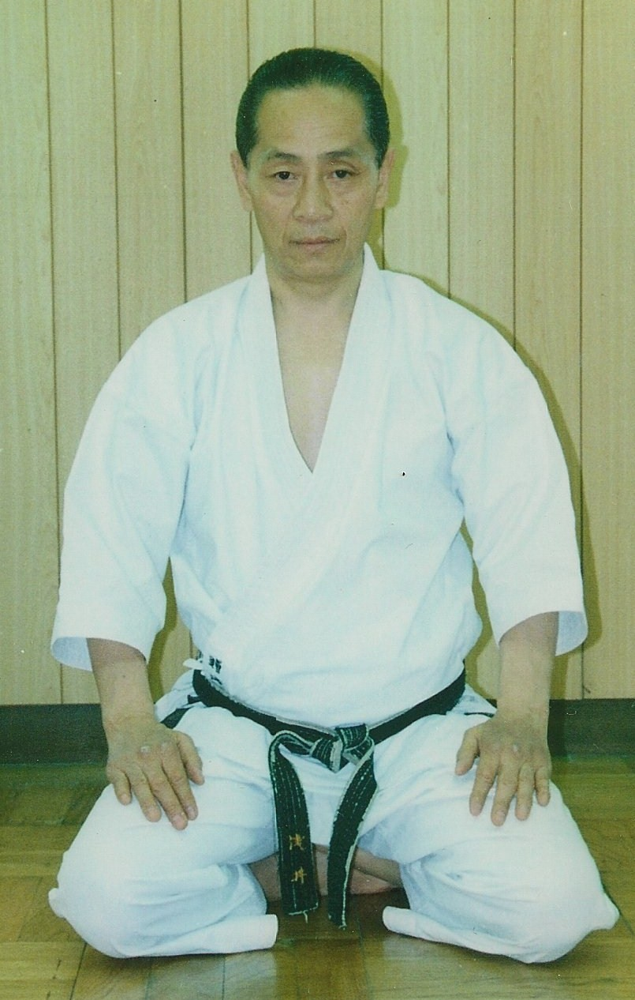

The Life of Tetsuhiko Asai
Tetsuhiko Asai, azana(a name received upon reaching adulthood), was born on June 7 of the 10th year of the Showa era (1935) as the first son of Tsunehiko Asai, a policeman, and Tsuneko, in a family of five boys and four girls.
When he was 12 years old, he entered a local karate dojo, and started his career as a karate practitioner. He joined the judo club at high school, and reached the second dan rank, showing a remarkable talent for martial arts from boyhood. He began to lay the foundations of his higher karate techniques through training in judo and karate at this time.
Tetsuhiko Asai then came to Tokyo, attended Takushoku University, and became a central member of the karate club. His lithe and agile physique allowed him to create many inimitable techniques, such as the "submarine", in which he passed under an opponent's kick and rapidly made his winning attack. Therefore, he gained much attention in the karate world.
In the 33rd year of the Showa era (1958), he graduated from Takushoku University, and was appointed as an instructor of the Japan Karate Association. He devoted his life to seeking for the quintessence of karate, and later became a chief instructor of the technical division of the Association and fostered many karate instructors.
In the 36th year of the Showa era (1961), Tetsuhiko Asai won the overall championship of "kata" and "kumite" contests at a karate competition that was watched by the reigning Emperor Showa. His name became well known in the international karate world, and was considered to have great potential. After he became famous in the karate world, he began teaching karate outside Japan in the 40th year of the Showa era (1965), beginning in Hawaii, then Taiwan, where he aggressively developed instructors and became known as the father of karate in Taiwan. He continued to travel to over 10 countries to teach karate for over 10 years. He was only 29 years old when he started teaching karate outside Japan, which was a rapid start for such a young martial artist.
Tetsuhiko Asai returned to Japan but continued to teach worldwide for the next 42 years. His students came from over 70 countries and taught over 300,000 students in his life. In the 12th year of the Heisei era (2000), he established "Japan Karate Shoto Federation", an Incorporated Nonprofit Organization, with like-minded people, to create a truly new, modern and unconventional school of karate. He then developed wheelchair karate, founded "Nihon Wheelchair Karatedo Renmei", and tried to spread this new style overseas.
Tetsuhiko Asai worried about the tendency to attach too much importance to competition in karate. He thought that the character as a martial art and the gymnastic aspects of karate should receive more attention, and that practitioners should try not only to win competitions, but also to develop more profound karate skills to build a healthy body and mental discipline. He continued severe training in karate for 2 hours early every morning without a single day off to practice his ideas for over 45 years. The new movement advocated by Asai aimed to shape a humanistic and gentle personality through karate, regardless of age, sex, and disability. Therefore, anyone including the disabled and old could study karate as a support for life through practicing and instruction according to their individual needs.
Tetsuhiko Asai sought a new style of karate, by not adhering to any traditional styles. He broke down 60 years karate's old pattern techniques, and concentrated on establishing the new Asai karate by introducing skills of various martial arts into the traditional Shoto style. He founded the International Japan Martial Art Karate Asai ryu (I.J.K.A.) for all karate lovers, regardless of style, where the karate lovers should improve by learning from others through friendly competition. He created more than 42 new kata, which were extensively introduced overseas. This concept of Asai was regarded as helping world peace, and was mostly supported by foreign countries. As his techniques would be effective against any style, practitioners came from more than 20 nations to study.
Asai's technical lectures held overseas were highly popular. Many practitioners of other styles attended from other countries, and some travelled more than 10 hours by car, bringing all members of their family. The Asai Cup International Karate Tournament was held in Japan, Chile, Ireland, Switzerland, Russia, and other countries, to include both Japan, Europe, and countries all over the world.
In the 16th year of the Heisei era (2004), the Far Eastern National University of Russia recognized his activities and conferred the title of honorary professor on him. Asai also tried to encourage instruction in karate within police services overseas, including Spain, Hungary, East Europe, Canada, Brazil, Hawaii, Hong Kong, Ireland, Mexico, Chile, Peru, Argentina, Romania, and others.
Both the "Japan Karate Shoto Federation" and "Nihon Wheelchair Karatedo Renmei" continued to progress under the ideas of Asai, and had 350 branches and more than several million members in Japan in the 18th year of the Heisei era (2006). Tetsuhiko Asai himself had reached a deep understanding of karate, and had established a flowing, elegant and mature karate style with more emphasis on the internal aspect, departing from his practical karate practised in late middle age.
As he foresaw his farewell, he spoke some words, like a benediction, describing the "adjustment to nature" in the program of the national competition. He had passed through the air sedately and at ease in the wide sky. Tetsuhiko Asai was admired as "he always created extra ordinary and unprecedented new techniques, for example, bowing both hands as a whip, striking a nonpredictable heavy blow enough to crush bones, and dropping kicks at will with his huge leg power; and his appearance was like a dragon flying in the sky and like a tiger running on the ground." Tetsuhiko Asai achieved a number of great feats, and reached the 10th dan, the highest rank of karate, during his life.